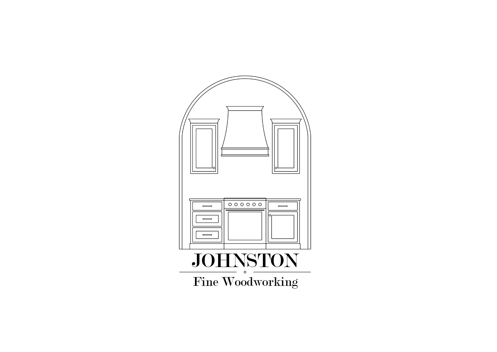
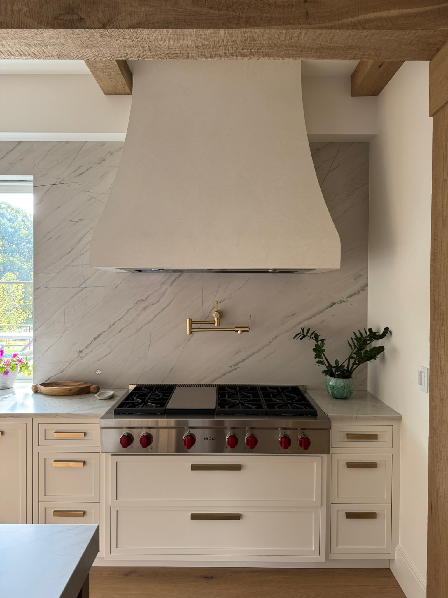
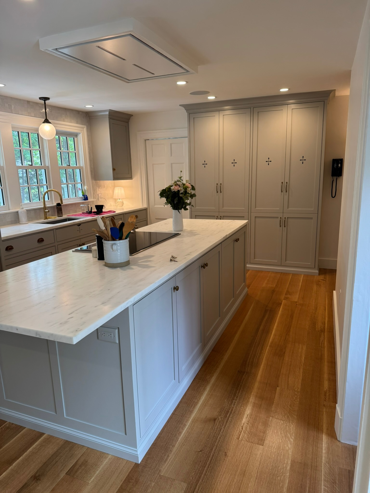
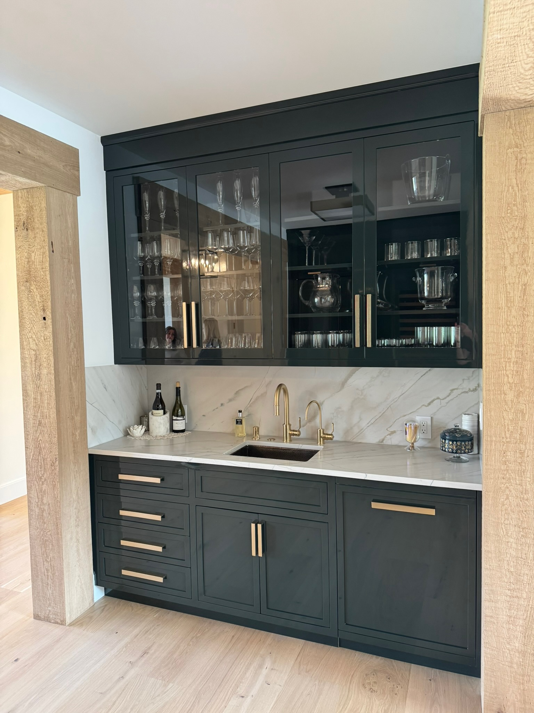
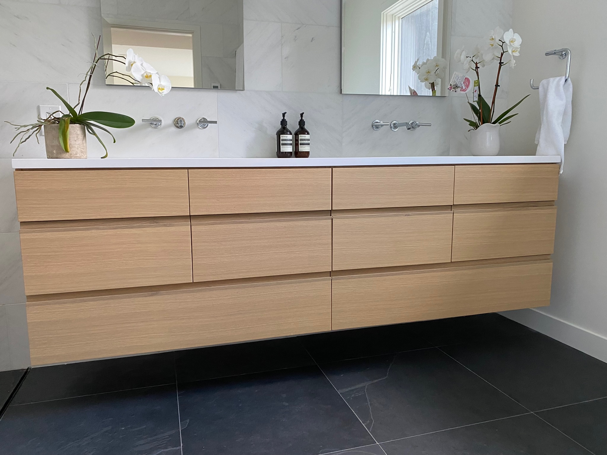
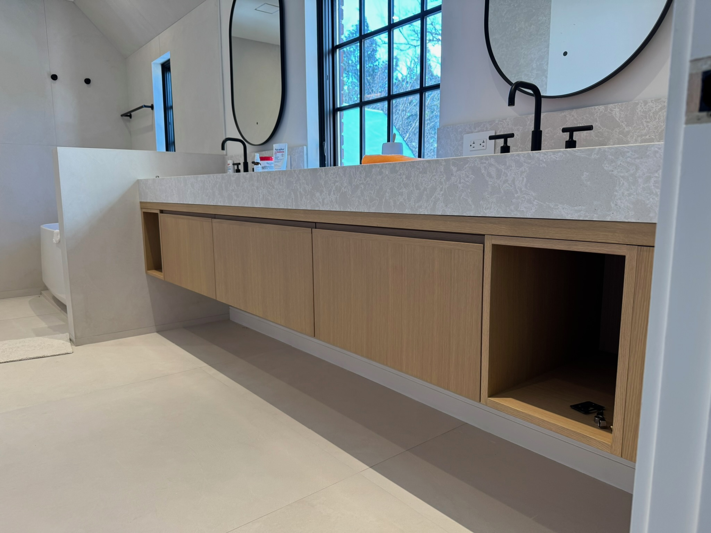
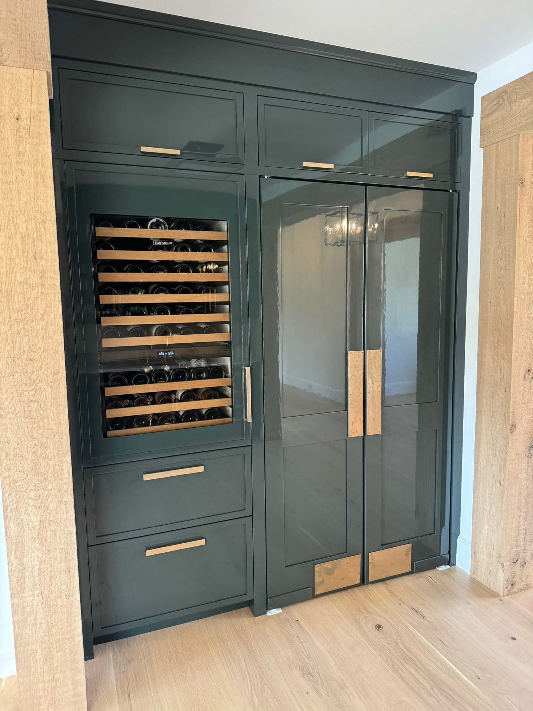
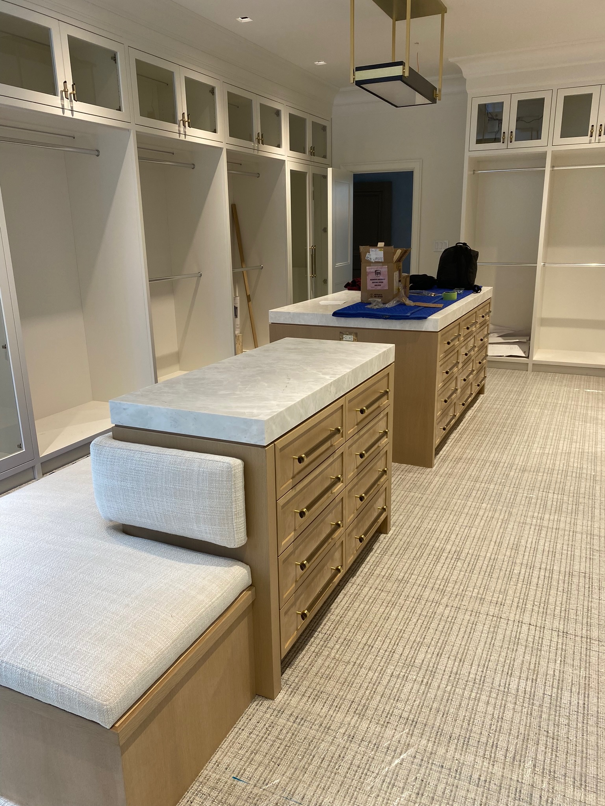

Consult
We begin with the room, the brief, and how you want to live with the finished work.


Bespoke cabinetry · Architectural millwork
Johnston Fine Woodworking creates refined, site-specific cabinetry with an exacting eye for proportion, material, and detail.
Explore selected work ↘We build custom cabinetry and architectural woodwork for homes where every line matters. From tailored kitchens and dressing rooms to vanities, bars, and built-ins, each project is considered as part of the architecture—not simply placed inside it.
Our approach favors timeless proportions, precise fabrication, thoughtful material selection, and details that reveal themselves slowly.
Selected work
Custom kitchens, storage, dressing rooms, vanities & built-ins.







Meet the maker
Owner & cabinetmaker
Owner bio placeholder — add Larry’s background, years of experience, time at Kenyon Woodworking, approach to craftsmanship, and the story behind founding Johnston Fine Woodworking.
His work is grounded in precision, restraint, and a respect for the architecture around it—combining traditional cabinetmaking discipline with a clean, contemporary point of view.
Capabilities
Cabinetry conceived around the architecture, workflow, and details of the home.
Libraries, bars, media walls, storage, paneling, and architectural details.
Tailored storage with considered proportions, materials, hardware, and finish.
Close coordination with homeowners, architects, designers, and builders from concept through installation.
Our process
We begin with the room, the brief, and how you want to live with the finished work.
Proportion, materials, construction, hardware, and detailing are resolved before fabrication.
Each component is fabricated with close attention to fit, finish, and longevity.
The final work is fitted carefully so it feels integral to the architecture.
Featured work
Prior to founding Johnston Fine Woodworking, Larry Johnston contributed his craftsmanship to projects at Kenyon Woodworking, including work featured in Boston Magazine and The Boston Globe Magazine.
Start a conversation
Tell us about your project, your home, and what you hope the finished space will feel like.